Manual de usuario de OpenQ
OpenQ leva un espectáculo a partir dunha lista de cues. Cada pulsación de GO dispara a seguinte: son, vídeo, texto nunha pantalla, fundidos, esperas ou mensaxes a outros equipos. Este manual explica como montar unha lista de cues, levala en directo e controlala desde outros dispositivos.
OpenQ fala galego, español e inglés. A primeira vez que se abre pregunta a lingua, e cámbiase cando queiras en . Este manual usa os nomes en galego de menús, lapelas e botóns, por exemplo ; algunhas palabras do oficio, como cue, GO ou Fade, quedan en inglés. As capturas amosan a interface en inglés.
01Primeiros pasos
Instalación
OpenQ compílase no teu propio ordenador co seu instalador, oqman. O instalador descarga o código da versión máis recente, instala o que precisa a compilación (Rust, un compilador de C e FFmpeg para o vídeo), compila OpenQ e engádeo ás túas aplicacións. Os teus espectáculos nunca se tocan.
Necesitas conexión a internet, varios gigabytes de espazo libre no disco e, en Linux e Windows, o contrasinal de administrador (úsase para instalar paquetes do sistema). A primeira instalación é a máis longa, porque compila o programa enteiro; nun ordenador antigo pode tardar moito. As actualizacións posteriores son máis rápidas, porque as dependencias xa están compiladas.
Linux
- Abre unha terminal, pega a orde de abaixo e preme Intro:
curl --proto '=https' --tlsv1.2 -fsSL https://github.com/iagonunez/oqman/releases/latest/download/install.sh | sh - O primeiro paso descarga o instalador, comproba a suma de control publicada e gárdao en
~/.local/bin. Despois arranca. - Cando amose os paquetes do sistema que precisa (un compilador de C, libclang, as cabeceiras de son ALSA e PipeWire, udev e FFmpeg), pregunta antes de instalalos co xestor de paquetes da túa distribución. Responde que si; o xestor pedirá o contrasinal.
- Se o ordenador non ten Rust, oqman instala unha copia privada na súa propia carpeta. O Rust que xa haxa no sistema non se toca.
- A compilación amosa cada paquete que compila. Deixa a terminal aberta ata que diga que OpenQ está instalado.
- Abre OpenQ desde o menú de aplicacións (busca «OpenQ»), ou escribe
openqnunha terminal.
Se a terminal di openq: orde non atopada, ~/.local/bin aínda non está no teu PATH. Engádea
unha vez e abre unha terminal nova:
fish_add_path ~/.local/bin # fish
echo 'export PATH="$HOME/.local/bin:$PATH"' >> ~/.bashrc # bash (zsh: ~/.zshrc)macOS
- Abre Terminal (preme ⌘ Espazo e escribe «Terminal»).
- Pega a orde de abaixo e preme Intro:
curl --proto '=https' --tlsv1.2 -fsSL https://github.com/iagonunez/oqman/releases/latest/download/install.sh | sh - Se o Mac aínda non ten as Command Line Tools de Apple, macOS abre o seu instalador. Acepta a licenza de Apple, agarda a que remate e volve executar a mesma orde.
- oqman compila FFmpeg desde o seu código fonte, o que leva tempo. Nun Mac Intel compila tamén NASM, o ensamblador que usa FFmpeg.
- A app queda en
~/Applications/OpenQ.app, a carpeta Applications da túa carpeta persoal. Ábrea desde o Finder (Ir → Carpeta persoal → Applications) ou con Spotlight. Como a compilaches neste Mac, macOS non amosa o aviso de «desenvolvedor non identificado».
Windows
- Abre PowerShell: preme a tecla Inicio, escribe PowerShell e preme Intro.
- Pega a orde de abaixo e preme Intro:
powershell -ExecutionPolicy Bypass -c "irm https://github.com/iagonunez/oqman/releases/latest/download/install.ps1 | iex" - Se o ordenador non ten as C++ Build Tools de Microsoft, ábrese o seu instalador coa carga de traballo «Desenvolvemento para escritorio con C++» marcada. Acepta a licenza de Microsoft e agarda a que remate; é grande e pode tardar. Despois oqman continúa só na mesma xanela.
- oqman descarga FFmpeg (a versión compartida LGPL) e libclang de LLVM, e compila OpenQ.
- Ao rematar, OpenQ está no menú Inicio e en Configuración → Aplicacións → Aplicacións instaladas.
Se algo falla
oqman doctoramosa o que está instalado e o que aínda lle falta á compilación.- Se a compilación se detén, le as últimas liñas que amosa, corrixe a causa (case sempre un paquete que falta ou un instalador cancelado) e volve executar a orde. O que xa se compilou consérvase, así que o segundo intento é máis rápido.
Actualizar e desinstalar
Para obter unha versión máis nova, executa oqman update: recompila OpenQ cando sae unha versión nova. Para
quitar OpenQ, executa oqman uninstall; pregunta antes. Con --purge quita tamén o Rust, as
dependencias e a caché de compilación de oqman. En Windows tamén podes quitalo desde Configuración →
Aplicacións → Aplicacións instaladas. Os teus espectáculos nunca se tocan.
Se só precisas cues, oqman install --no-lighting compila OpenQ sen o espazo de iluminación (sen vista
Iluminación, cues Light nin descargas de aparellos); a compilación é máis pequena e rápida. Os
espectáculos cun deseño de iluminación seguen abríndose, consérvano e reproducen os seus cues Light.
oqman install --lighting volve engadilo.
Para executar unha copia na que esteas a traballar desde o código fonte:
cargo run --release # comezar cun espectáculo baleiro
cargo run --release -- show.openq # abrir un espectáculo gardadoEste manual vén dentro de OpenQ: escolle ou preme F1 para abrilo no teu navegador, na lingua da interface. Funciona sen conexión a internet e sempre corresponde á túa versión de OpenQ.
O teu primeiro espectáculo
- Arrastra ficheiros de audio ou vídeo desde o teu xestor de ficheiros á xanela. Cada ficheiro convértese nunha cue. Tamén podes usar .
- Engade outras cues desde a barra de ferramentas sobre a lista de cues, ou preme Ctrl+1…0.
- Selecciona unha cue e axusta as súas opcións no inspector, na parte inferior da xanela.
- Fai clic na primeira cue para poñer o cabezal (playhead) sobre ela e preme Espazo (GO).
- Garda con Ctrl+S. Os espectáculos gárdanse como ficheiros
.openq. As rutas dos medios gárdanse relativas ao ficheiro do espectáculo, así que podes mover o cartafol do espectáculo enteiro.
Garda o ficheiro do espectáculo no mesmo cartafol ca os seus medios. Así o cartafol pódese copiar a outro ordenador e abrirse alí sen cambios.
02A xanela principal
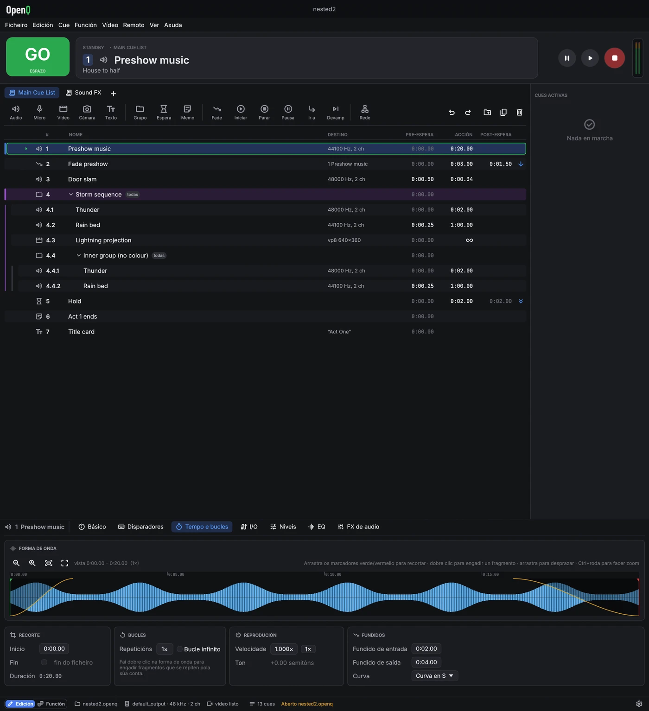
- Barra de título: o nome do espectáculo (un punto indica cambios sen gardar). En Windows tamén contén os botóns de minimizar, maximizar e pechar: arrastra a barra para mover a xanela, fai dobre clic para maximizala e arrastra calquera bordo para cambiar o seu tamaño.
- Menús: Ficheiro, Edición, Cue, Función, Vídeo (escenarios e saídas), Remoto, Ver (vista previa de xeometría, rexistro do motor) e Axuda (este manual, o rexistro de erros, acerca de e licenzas).
- GO dispara a cue que está baixo o cabezal. A tarxeta Standby amosa esa cue, coas súas notas debaixo para que o operador poida lelas antes de premer GO.
- Transporte: pausar todo, retomar todo, parar todo. Ao lado, os medidores de saída amosan cada canle do dispositivo en dB.
- Lapelas de listas: unha lapela por lista de cues (ver máis abaixo).
- Lista de cues: número, nome, destino (datos do ficheiro ou a cue de destino), pre-espera, tempo de acción, post-espera e a frecha de continuación. As cues en marcha vólvense verdes e a súa columna de acción fai a conta atrás. Unha icona vermella marca un ficheiro ou destino que falta. Os ficheiros compróbanse en segundo plano cada par de segundos, así que unha unidade de rede lenta nunca conxela a xanela, e unha unidade que se volve conectar quita a icona por si soa.
- Cues activas: cada cue en marcha co seu tempo transcorrido e restante, e os seus propios botóns de pausa e parada.
- Inspector: os axustes da cue seleccionada, en lapelas. Cada lapela agrupa os seus axustes en tarxetas. Ábrese con altura suficiente para amosar unha lapela enteira; arrastra o seu bordo superior para cambiar o seu tamaño.
- Barra de estado: o interruptor Edición / Función á esquerda, e despois o dispositivo de audio, o estado do vídeo, OSC, as conexións remotas e as mensaxes. O botón da dereita abre os axustes. Un aviso do motor aparece ao seu lado durante uns segundos e abre o rexistro do motor; as mensaxes da parte esquerda da barra tamén desaparecen ao cabo duns segundos.
Traballar coa lista de cues
- Fai clic nunha cue para seleccionala e mover o cabezal a ela. Usa Ctrl-clic para seleccionar varias cues, Maiús-clic para un rango, e ↑ ↓ para mover o cabezal.
- Arrastra as cues para reordenalas. Sóltaas no centro da fila dun grupo para metelas dentro.
- Fai dobre clic nun número, nome, pre-espera ou post-espera para editalo no sitio. Intro confirma e Esc cancela.
- Fai clic na columna de continuación para pasar por non continuar → autocontinuar → autoseguir.
- Fai clic dereito nunha fila para iniciar, parar, duplicar, borrar e máis.
Listas de cues
Un espectáculo pode ter varias listas de cues, por exemplo a secuencia principal e unha lista de efectos de son para disparar á man. Cada lista ten unha lapela sobre a barra de ferramentas; fai clic nunha lapela para traer esa lista á fronte. GO, o cabezal e a tarxeta de espera traballan sobre a lista da fronte, e cada lista lembra onde estaba o seu cabezal.
- Fai clic en para engadir unha lista. Fai clic dereito na lapela da lista actual para renomeala (ou dobre clic), movela, axustar o seu código de tempo ou borrala.
- As cues seguen a soar ao cambiar de lista, e as cues Iniciar, Parar, Fade e outras poden apuntar a cues de calquera lista. No menú de destino, as cues doutras listas amosan o nome da súa lista.
- Os números de cue son comúns a todas as listas, así que OSC e os atallos chegan a cues de calquera lista.
03Modo edición e modo función
O modo edición (Edición) é para montar o espectáculo: todo se pode cambiar. O modo función (Función) é para levalo. A lista queda bloqueada, a barra de ferramentas e o inspector ocúltanse, e as filas fanse máis grandes para lelas con facilidade nunha cabina ás escuras. GO, parar, pausa, os atallos e mover o cabezal funcionan nos dous modos.
Cambia co interruptor á esquerda da barra de estado, , ou Ctrl+E.
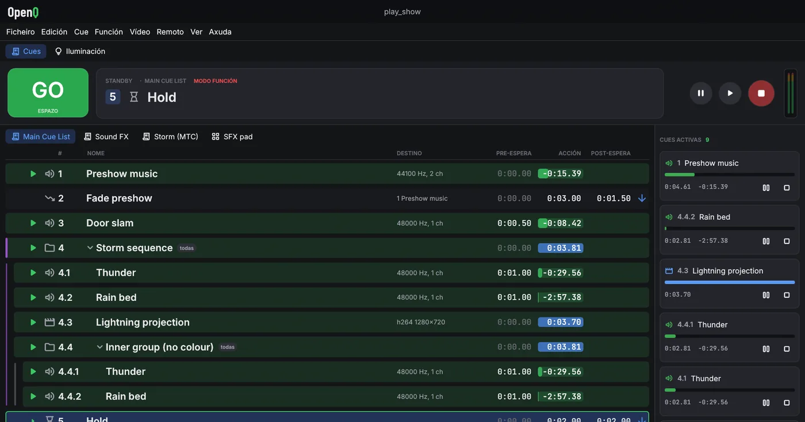
Parar
Esc ou o botón vermello de parada funde todo a silencio durante o tempo de fundido de Parar todo (ver Axustes). Prémeo outra vez durante ese fundido para parar ao instante.
A protección contra dobre GO ignora un segundo GO que chegue moi pouco despois do primeiro, para que unha tecla que rebota non salte unha cue.
04Tipos de cue
Cada cue ten un número (texto libre, como 4.2), un nome, notas,
unha cor e un interruptor Armada, todo na lapela Básico. GO salta unha cue desarmada.
Básico tamén axusta a pre-espera, o modo de continuación e a post-espera da
cue e, para cues de audio e vídeo, o ficheiro de medios.
A lapela Disparadores reúne as formas de disparar unha cue ademais de GO: un atallo, unha tecla que dispara a cue directamente estea onde estea o cabezal, e un disparador por código de tempo.
05Tempos e continuacións
Cada cue ten tres tempos. A pre-espera transcorre entre GO e a acción da cue. A acción é a cue en si: un son que soa, un fundido en marcha. A post-espera cóntase desde o inicio da acción e úsaa autocontinuar.
| Modo de continuación | Que pasa despois |
|---|---|
| Non continuar | Nada. O cabezal pasa á seguinte cue e agarda por GO. |
| Autocontinuar | A seguinte cue dispárase cando se esgota a post-espera desta. |
| Autoseguir | A seguinte cue dispárase cando remata a acción desta. |
As cues encadeadas arrancan exactamente no límite dunha mostra, así que unha secuencia mantén o seu tempo por moito que dure.
Grupos
| Modo de grupo | Comportamento |
|---|---|
| Iniciar a primeira filla e entrar no grupo | Dispara a primeira cue do grupo e mete o cabezal dentro. |
| Iniciar a primeira filla e pasar á seguinte cue | Unha lista de reprodución: as fillas soan unha tras outra mentres o cabezal pasa máis alá do grupo. |
| Iniciar todas as fillas á vez | Dispara todo o que contén á vez, cada un coa súa propia pre-espera. |
| Iniciar unha filla ao chou e pasar á seguinte cue | Dispara unha filla escollida ao chou. |
Selecciona cues e preme Ctrl+G para agrupalas. ← e → pregan e despregan un grupo. Os grupos poden conter outros grupos. Cada nivel sangrase cunha liña guía, para ver onde remata un grupo.
06Cues de audio
Tempo e bucles
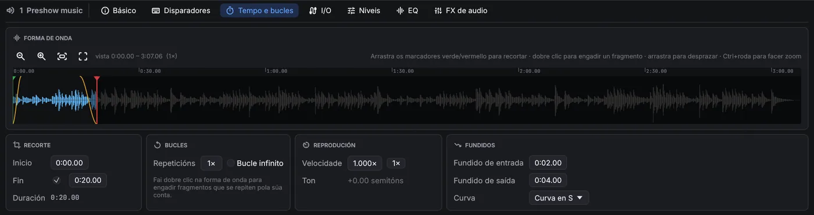
- Recorte: arrastra os marcadores de inicio e fin, ou escribe os tempos. Arrastra a forma de onda para desprazarte e usa Ctrl+roda para facer zoom. Unha liña amosa a posición de reprodución mentres a cue soa.
- Bucles: fixa un número de Repeticións ou marca Bucle infinito para repetir ata que se pare.
- Reprodución: a velocidade é varispeed. O ton cambia coa velocidade, como nun magnetófono.
- Fundidos: unha entrada desde silencio ao comezar a cue e unha saída a silencio ao final, con varias curvas para escoller, sen necesidade dunha cue Fade á parte. A saída precisa un final coñecido, así que non ocorre mentres a cue se repite indefinidamente; cun fragmento en vamp soa despois do Devamp.
- Fragmentos: fai dobre clic na forma de onda para engadir un marcador de fragmento. Arrástrao para
movelo e fai clic dereito para borralo. Cada fragmento soa un número fixo de veces ou repítese ata que unha cue
Devamp (ou a mensaxe OSC
/cue/<n>/devamp) o libera. Entón remata a pasada actual e a reprodución segue. Úsao para música que ten que facer vamp ata a frase dun actor.
I/O
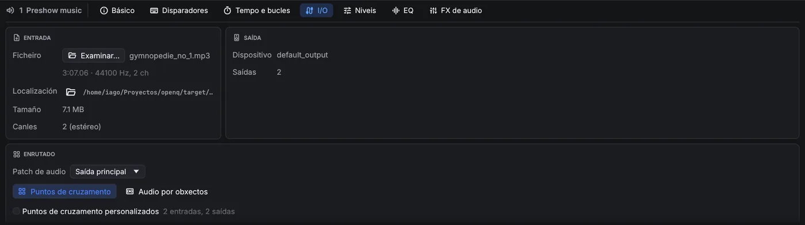
- Entrada: o ficheiro de medios, coa súa duración, formato, localización no disco (e un botón para amosalo no xestor de ficheiros), tamaño e número de canles. Examinar… substitúe o ficheiro.
- Saída: o dispositivo de audio polo que soa a cue e o seu número de saídas (axústase en Axustes → Audio).
- Enrutado: automático, ou unha matriz de puntos de cruzamento das canles do ficheiro ás saídas do dispositivo. Cada punto de cruzamento ten o seu propio nivel en dB, así que un ficheiro estéreo pode alimentar oito altofalantes. Ou cambia a Audio por obxectos e coloca as canles na sala (máis abaixo).
Audio por obxectos
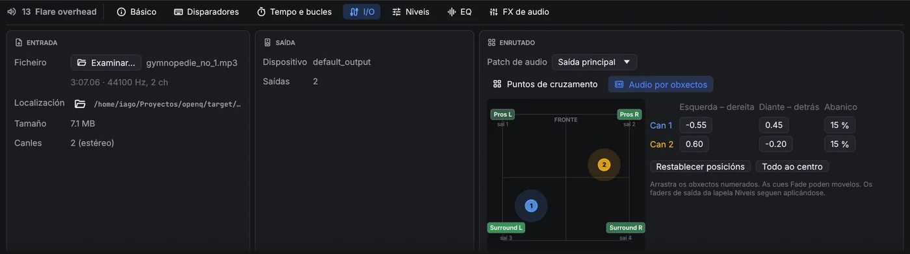
O audio por obxectos enruta o son segundo de onde debe vir en lugar de por saída. Escolle Audio por obxectos na tarxeta Enrutado: cada canle do ficheiro convértese nun obxecto que arrastras pola sala (ou cuxa posición escribes). Os altofalantes máis próximos a un obxecto reprodúceno máis forte; o nivel baixa 6 dB cada vez que a distancia se duplica, e a potencia total é a mesma estea onde estea o obxecto, así que movelo nunca cambia o seu volume. Apertura ensancha un obxecto desde un punto (0 %) ata toda a sala (100 %). Os faders de saída da lapela Niveis seguen a aplicarse, e as cues Micro e as bandas sonoras de vídeo tamén poden usar audio por obxectos.
A sala axústase unha vez por espectáculo en Axustes → Audio. Unha cue Fade pode mover os obxectos, para un son que voa pola sala. Os movementos suavízanse, así que arrastrar un obxecto nunha cue que soa non produce estalidos.
Niveis
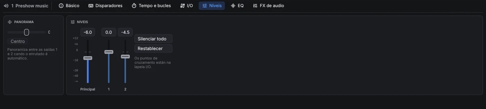
O fader Principal fixa o nivel da cue. Ao seu lado hai un fader por cada saída do dispositivo de audio, que axusta esa saída despois da matriz de enrutado. Arrastra un fader ou escribe un valor na caixa de enriba; fai dobre clic nun fader para devolvelo a 0 dB. Panorama move o son entre as saídas 1 e 2 mentres o enrutado é automático.
EQ
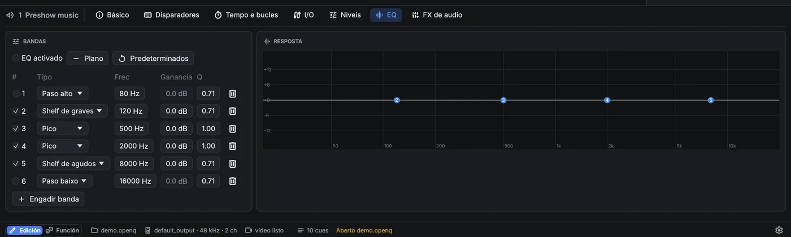
Os tipos de banda son paso alto, shelf de graves, pico, shelf de agudos e paso baixo. EQ activado activa e desactiva todo o ecualizador.
FX de audio
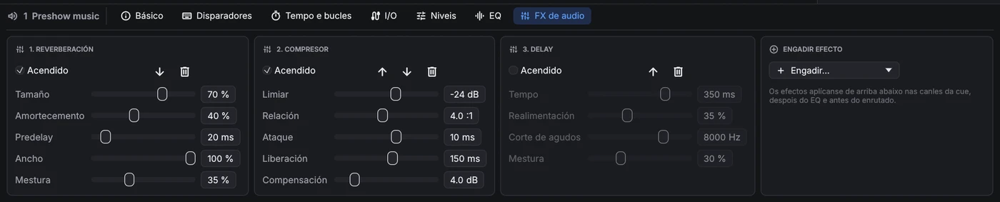
As cues de audio, Micro e vídeo teñen unha lapela FX de audio: unha cadea de ata oito efectos que actúan de arriba abaixo sobre as canles da cue, despois do EQ e antes do enrutado. Engadir… pon un efecto novo ao final; as frechas cambian a orde, Acendido pontea un efecto sen perder os seus axustes.
| Efecto | Axustes | Uso |
|---|---|---|
| Delay | tempo, realimentación, corte de agudos, mestura | Ecos; o corte de agudos escurece cada repetición. |
| Reverberación | tamaño, amortecemento, predelay, ancho, mestura | Son de sala para gravacións secas ou voces. |
| Compresor | limiar, relación, ataque, liberación, compensación | Iguala o nivel; todas as canles móvense xuntas. |
| Limitador | teito, liberación | Nunca deixa pasar un pico por riba do teito. |
| Porta de ruído | limiar, rango, ataque, mantemento, liberación | Baixa un micrófono entre frases. |
| Distorsión | ganancia, ton, saída, mestura | Sons de radio, de teléfono ou saturados. |
| Chorus | velocidade, profundidade, retardo, realimentación, mestura | Engorda e ensancha un son. |
| Bitcrusher | bits, submostraxe, mestura | Sons lo-fi, de videoxogo retro. |
Os cambios de nivel, fader de saída, panorama, EQ, efectos, enrutado e obxectos óense ao momento nunha cue que soa, así que podes axustalos durante un pase. As colas de reverb e delay continúan a través dunha edición.
Cues Micro
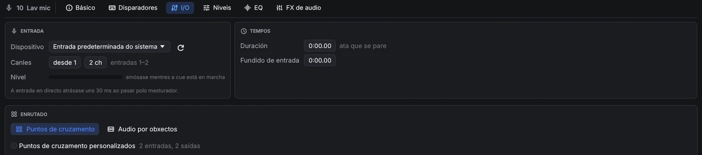
Unha cue Micro envía unha entrada en directo (un micrófono, unha entrada de liña, un reprodutor) polo mesturador de OpenQ, así que ten os mesmos faders de Niveis, panorama, EQ e enrutado ca unha cue de audio, e as cues Fade poden fundila. Na lapela I/O escolle o dispositivo de entrada e que canles usar, por exemplo as entradas 3–4 para un par estéreo. Unha duración de 0 mantén a entrada aberta ata que se para a cue, e a entrada en fundido sóbea desde silencio. A entrada chega ás saídas cuns 30 ms de atraso, demasiado pouco para oírse como eco na maioría de salas.
07Cues de vídeo e texto
Unha cue de vídeo reproduce unha película (todo o que FFmpeg pode reproducir) ou unha imaxe fixa: PNG, JPEG, WebP, GIF, TIFF, BMP ou SVG. As imaxes amósanse durante un tempo fixo ou ata que se paran. Un SVG debúxase ao tamaño ao que se vai amosar, incluída a maior escala á que chegan a súa xeometría e a súa animación, así que logotipos e debuxos de liña vense nítidos. Tempo e bucles ten recortes de inicio e fin, bucles e Manter o último fotograma. A lapela Audio ten os faders principal e de saída da banda sonora, e I/O o seu ficheiro e enrutado; a banda sonora soa polo mesturador como unha cue de audio.
Xeometría
- Escenario: a que saída vai a imaxe. Sen ningunha, úsase o primeiro escenario.
- Axustar: Axustar amosa a imaxe enteira (con bandas), Encher cobre o escenario e recorta o que sobra, Estirar énchea exactamente e Tamaño nativo usa os píxeles propios do ficheiro.
- Capa (as máis altas debúxanse enriba) e opacidade.
- Posición, escala e rotación. A posición é unha porcentaxe do escenario:
X 25%move a imaxe un cuarto do escenario cara á dereita. Activa proporcional para escalar os dous eixes á vez. - Recorte: quita unha porcentaxe pola esquerda, arriba, dereita e abaixo. O resto da imaxe queda onde estaba.
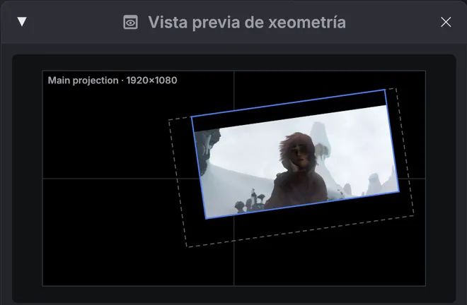
A vista previa de xeometría (, ou Vista previa na lapela Xeometría) debuxa o escenario da cue seleccionada coa imaxe no seu sitio, sen abrir unha saída de proxector. En modo edición, arrastra na vista previa para mover a imaxe, usa a roda para escalala e fai dobre clic para centrala. Para unha cue Fade que cambia a xeometría, a vista previa amosa onde remata o fundido, coa posición inicial como contorno descontinuo.
Cues Cámara
Unha cue Cámara amosa unha cámara en directo (unha webcam, unha capturadora USB ou HDMI) como capa nun escenario, coa mesma lapela Xeometría ca o vídeo: posición, escala, rotación, recorte, opacidade e capa, e as cues Fade poden movela e fundila. Na lapela Cámara escolle o dispositivo e, se o precisas, o tamaño de captura; Espello voltea a imaxe como nun selfi. Amosar durante 0 mantena ata que se pare. O dispositivo e o tamaño úsanse a próxima vez que arrinque a cue.
Cues Texto
As cues de texto amosan texto escrito nun escenario: títulos, sobretítulos, subtítulos ou unha conta atrás para o equipo. As lapelas Xeometría e Animación funcionan como no vídeo, e as cues Fade poden mover e fundir o texto. Os cambios na lapela Texto aparecen ao momento nunha cue que se está a amosar.
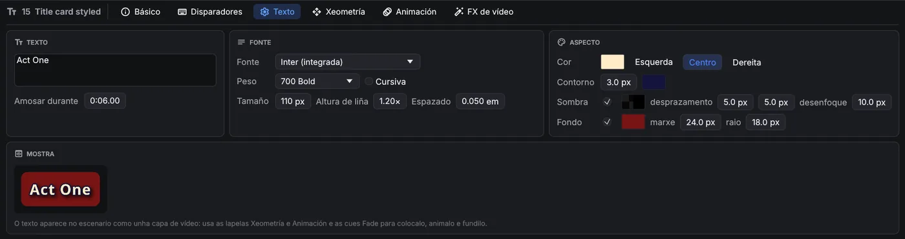
| Axuste | Que fai |
|---|---|
| Fonte | Calquera fonte instalada no ordenador. Escribe na lista para buscar. Inter (integrada) está sempre dispoñible. |
| Peso · Cursiva | De Thin (100) a Black (900). Os pesos que a fonte non inclúe aparecen en gris e úsase o instalado máis próximo. |
| Tamaño | Tamaño de letra en píxeles do escenario: 96 px nun escenario de 1080 liñas é unha décima parte da súa altura. |
| Altura de liña · Espazado | Distancia entre liñas (como múltiplo do tamaño) e espazo extra entre letras en em. |
| Cor · aliñamento | Cor e transparencia do texto; liñas á esquerda, centradas ou á dereita. |
| Contorno | Un bordo arredor de cada letra, en píxeles do escenario, coa súa propia cor. Mantén o texto lexible sobre vídeo cargado. |
| Sombra | Unha sombra suave: cor, desprazamento á dereita e abaixo, e desenfoque. |
| Fondo | Unha caixa detrás do texto: cor e transparencia, marxe (espazo arredor do texto, en píxeles do escenario) e raio para esquinas arredondadas. Boa para subtítulos e sobretítulos sobre vídeo. |
| Amosar durante | Tempo en pantalla; 0 amósaa ata que se pare. |
O texto compóñese correctamente en calquera lingua. Pares como AV levan kerning, úsanse ligaduras e a escrita de dereita a esquerda funciona. Os caracteres que non ten a fonte escollida, como emoji ou chinés, debúxanse con outra fonte instalada. O texto renderízase ao dobre da resolución do escenario, así que se ve nítido ao amplialo e suave ao reducilo.
O texto prepárase en segundo plano antes do seu GO, e outra vez despois de cambiar o seu aspecto, así que arrancar ou editar unha cue de texto nunca retén o espectáculo. Os cambios de cor, movementos e animacións non precisan preparación. Tras cambiar o texto, a fonte ou o tamaño dunha cue que se está a amosar, a versión nova substitúe a antiga un momento despois.
O ficheiro do espectáculo garda o nome da fonte, non a fonte en si. Instala as mesmas fontes en cada ordenador que reproduza o espectáculo. Se falta unha fonte, a lapela Texto indica non instalada aquí e úsase unha fonte de substitución.
Animación
A lapela Animación das cues de vídeo e texto move, escala, xira, recorta, funde e cambia a cor da capa con fotogramas clave. A animación comeza cando arrinca a cue e segue o reloxo da propia cue: pausar a cue pausaa.
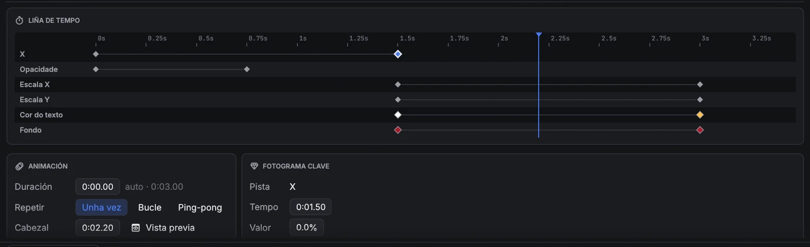
- Engadir pista escolle unha propiedade. O seu primeiro fotograma clave queda no cabezal e non cambia nada, así que despois podes poñer os valores que queiras.
- Liña de tempo: fai clic na regra ou nunha fila para mover o cabezal. Fai clic nun fotograma clave para seleccionalo e arrástrao de lado para cambiar o seu tempo. Fai dobre clic nunha fila para engadir un fotograma clave aí.
- Tarxeta Fotograma clave: o tempo e o valor da clave seleccionada, e Despois, que indica como pasa o valor á clave seguinte: Manter (quédase e logo salta), Lineal, Entrada suave, Saída suave, Entrada e saída suaves ou unha Curva personalizada (unha Bézier cúbica, escrita como en CSS: x1 y1 x2 y2). Fotograma clave no cabezal engade unha clave co valor que ten a pista no cabezal.
- Duración é unha pasada da animación; 0 significa que remata no último fotograma clave. Unha liña ámbar descontinua márcaa na liña de tempo. Repetir: Unha vez mantén os últimos valores, Bucle volve comezar, Ping-pong vai cara adiante e logo cara atrás.
- Activa Vista previa para ver a capa na vista previa de xeometría tal e como está no cabezal. Un contorno descontinuo amosa a posición propia da cue.
| Propiedade | Valor | Como se combina coa cue |
|---|---|---|
| X · Y | % do escenario | Súmase á posición da lapela Xeometría. |
| Escala X · Escala Y | % | Multiplica a escala da lapela Xeometría: 200% duplícaa. |
| Rotación | graos | Súmase á rotación. 360° é unha volta completa. |
| Recorte esquerda · arriba · dereita · abaixo | % da imaxe | Súmase ao recorte. Anímao para cortinas e revelados. |
| Opacidade | % | Multiplica a opacidade da cue. |
| Tinguidura | cor | Multiplica as cores da imaxe. O branco déixaa igual. Unha tinguidura só pode escurecer ou recolorear: o branco convértese na cor da tinguidura e o negro segue negro. |
| Cor do texto · Cor do contorno · Cor da sombra · Fondo | cor (só texto) | Substitúen as cores da lapela Texto. |
Como os valores son relativos, unha cue Fade ou un cambio na lapela Xeometría seguen a mover ou fundir toda a capa animada. Por exemplo, unha animación pode facer que un logotipo suba e baixe mentres unha cue Fade o despraza polo escenario.
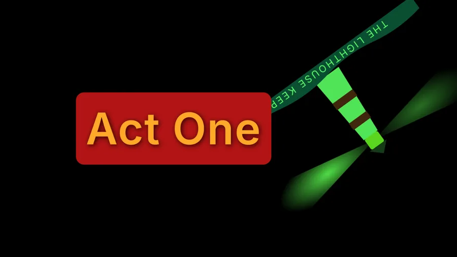
As animacións calcúlanse en directo mentres se debuxa o escenario: unhas poucas operacións por capa, co movemento, a escala e a cor a cargo da tarxeta gráfica. Non se renderiza nin descodifica nada por adiantado, así que animar unha capa custa o mesmo que amosala queda. Os cambios que fagas aparecen ao momento, mesmo nunha cue en marcha, a calquera resolución de escenario. O desenfoque e os cambios de cor son efectos de vídeo, que unha cue Fade pode animar.
FX de vídeo
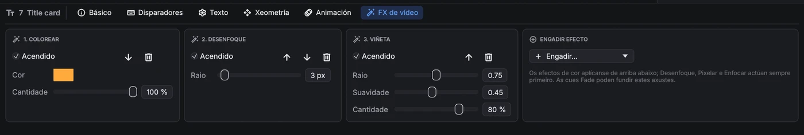
As cues de vídeo, cámara e texto teñen unha lapela FX de vídeo, unha morea de efectos sobre a imaxe. Engádeos, reordénaos e actívaos como os efectos de audio. Debúxaos a tarxeta gráfica mentres debuxa o escenario, así que case non custan nada e cambian en directo, mesmo nunha cue en marcha.

| Efecto | Axustes |
|---|---|
| Controis de cor | Brillo, contraste, saturación (0 = branco e negro). |
| Exposición | Exposición en pasos, gamma. |
| Matiz | Xira todas as cores pola roda de cor. |
| Colorear | Monocromo na cor que escollas. |
| Sepia · Inverter | Cantidade. |
| Posterizar | Número de niveis por cor. |
| Limiar | Corte a branco e negro nun nivel de brillo. |
| Viñeta | Escurece os bordos: raio, suavidade, cantidade. |
| Desenfoque · Pixelar · Enfocar | Raio ou tamaño de bloque nos píxeles propios da imaxe. |
| Chroma key | Fai transparente unha cor (croma verde ou azul nunha cue de cámara): cor clave, limiar, suavidade e derrame, que quita o reflexo verde dos bordos que quedan. |
Os efectos de cor actúan de arriba abaixo; Desenfoque, Pixelar e Enfocar cambian como se le a imaxe, así que sempre actúan primeiro. Os efectos aplícanse despois da tinguidura e a opacidade da capa, e funcionan con todos os modos de fusión.
08Fundidos
Unha cue Fade cambia outra cue mentres soa. Escolle a cue de destino, a duración e a curva (lineal, en S ou logarítmica), e marca o que queres cambiar:
- Nivel en dB, para audio e para bandas sonoras de vídeo.
- Opacidade, para vídeo e texto.
- Xeometría: posición, escala, rotación e recorte. Parte da xeometría propia do destino, así que só se moven os valores que cambies.
- Efectos de vídeo: os axustes de FX de vídeo do destino cópianse no fundido ao marcalo; cambia os valores cara aos que fundir. Un efecto apagado aquí fúndese cara a fóra, e os efectos que o destino non ten entran fundindo desde nada. Tomar os efectos do destino vólveos copiar despois de cambiar de destino.
- Obxectos, para destinos en modo audio por obxectos: as posicións e a dispersión ás que mover os obxectos, editadas na mesma vista de sala.
Unha cue Fade non pode ter como destino unha cue de luz: a iluminación funde coas súas propias cues de luz (ver Iluminación).
Marca Parar o destino para un fundido de saída: o destino párase ao rematar o fundido. Pausar un fundido conxélao, e retomalo continúa co tempo que quedaba.
09Código de tempo
OpenQ pode levar unha lista de cues a partir de código de tempo SMPTE entrante, para un espectáculo sincronizado cun vídeo, o click dunha banda ou unha mesa de luces. Le LTC (código de tempo como sinal de audio) nunha entrada de audio ou MTC (MIDI Time Code) nunha entrada MIDI, a 24, 25, 29,97 drop-frame ou 30 fps.
Configurar unha lista de cues
Fai clic dereito na lapela da lista e escolle Timecode…. Escolle que segue a lista (LTC ou MTC), a entrada de audio e a canle ou a entrada MIDI pola que chega, e a frecuencia de fotogramas. A xanela amosa o código de tempo que entra, e mentres esa lista está á fronte a tarxeta de espera tamén o amosa. Cada lista segue a súa propia fonte, así que unha lista pode seguir o LTC da banda mentres outra se leva á man.
Disparadores por código de tempo
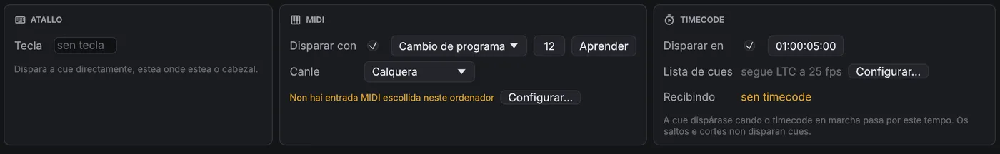
Na lapela Disparadores dunha cue, marca Disparar en e escribe o tempo (hh:mm:ss:ff). Cando o código de tempo da lista pasa por ese momento, a cue dispárase, estea onde estea o cabezal, e as súas continuacións funcionan coma sempre. A lapela amosa que segue a lista e que está a recibir; Configurar… abre os axustes de código de tempo da lista.
Só o código de tempo que avanza dispara cues. Cando a fonte salta (un locate ou un rebobinado) ou se para, non se dispara nada, e os disparos retómanse desde a nova posición, así que ensaiar unha sección facendo retroceder a fonte é seguro.
10Escenarios e proxección
Un escenario (stage) é unha saída de vídeo, como un proxector ou unha pantalla. Engade escenarios en . Cada un ten un nome e un tamaño de lenzo en píxeles.
Enviar un escenario a unha pantalla
En , ou co despregable Saída de Axustes → Escenarios de vídeo, escolle Xanela ou unha das pantallas conectadas. Un escenario asignado a unha pantalla ábrese a pantalla completa nela, e volve abrirse alí ao cargar o espectáculo. Se unha pantalla non aparece, usa Actualizar pantallas. Nunha xanela de escenario, fai dobre clic ou preme F11 para alternar a pantalla completa.
Mapeado
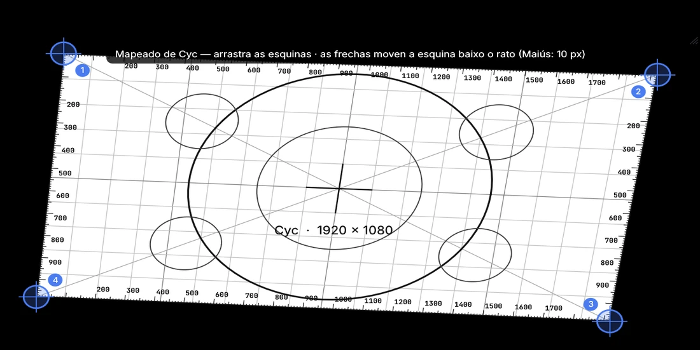
Editar mapeado amosa un patrón de axuste no escenario: un lenzo branco cunha cuadrícula cadrada, regras de píxeles en cada bordo, círculos, diagonais e unha cruz central, todo debuxado a través do mapping, ademais de catro esquinas numeradas. Arrastra as esquinas para encaixar a imaxe na pantalla (corrección de trapecio), ou pasa o rato por unha esquina e móvea coas frechas: un píxel cada vez, ou dez con Maiús. Restablecer mapeado devolve as esquinas ao seu sitio.
11Iluminación
OpenQ controla a iluminación por DMX. O deseño de iluminación (patch, grupos, presets, efectos e secuencias de cues de iluminación) gárdase á parte da lista de cues, no espazo de Iluminación: cambia entre e Cues enriba da lista de cues. O deseño só se pode cambiar en modo edición. En modo función, o espazo de Iluminación amosa os executores e o monitor DMX.
Cues de luz
Unha cue de Luz da lista de cues reproduce o deseño
de iluminación; non garda niveis propios. Na súa lapela Axustes escolle a Acción: GO de cue de iluminación
lanza unha cue de iluminación dunha secuencia (amósase como secuencia/cue) cos seus propios fundidos, e
Liberación apaga unha secuencia, ou todas, no tempo indicado. As cues de luz lánzanse xunto co son e o vídeo, así que
un cambio de luz pode ir no mesmo GO ca un efecto ou un vídeo.

Unha cue de parar dirixida a unha cue de luz libera a secuencia desa cue. Con Parar todo tamén apaga a iluminación (páxina Secuencias), Parar todo (tamén a parada inmediata) e as cues de parar sen destino liberan tamén todas as secuencias, co Fundido ao liberar.
A iluminación só funde mediante cues de luz: unha cue de iluminación funde cos seus propios tempos, e a seguinte cue de iluminación ou unha liberación seguen desde aí. As cues Fade non actúan sobre cues de luz.
Patch
A páxina Patch ten tres vistas: Táboa, Planta e Tipos de aparato. A táboa lista os aparatos. Para engadir (na Táboa ou na Planta), escolle un tipo de aparato e un modo en Engadir aparatos, indica cantos, o primeiro número de aparato, o universo e o enderezo inicial (auto colle o seguinte libre), e preme Sumar. Todas as celas da táboa pódense editar: nome, tipo, modo, universo, enderezo, posición e rotación, e a inversión de panorama ou tilt. Os enderezos que se solapan e os números repetidos avísanse enriba da táboa.
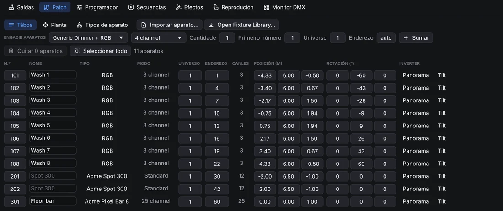
Os aparatos de varias celas, como as barras LED, contrólanse tamén cela a cela: a cela 3 do aparato 101 é
101.3. Planta amosa a montaxe desde arriba. Fai clic para seleccionar (Ctrl engade), arrastra
para mover a selección, arrastra nun oco para desprazar a vista e usa a roda para achegar. Con aparatos seleccionados,
Colocar repárteos en liña, en arco ou en cuadrícula.
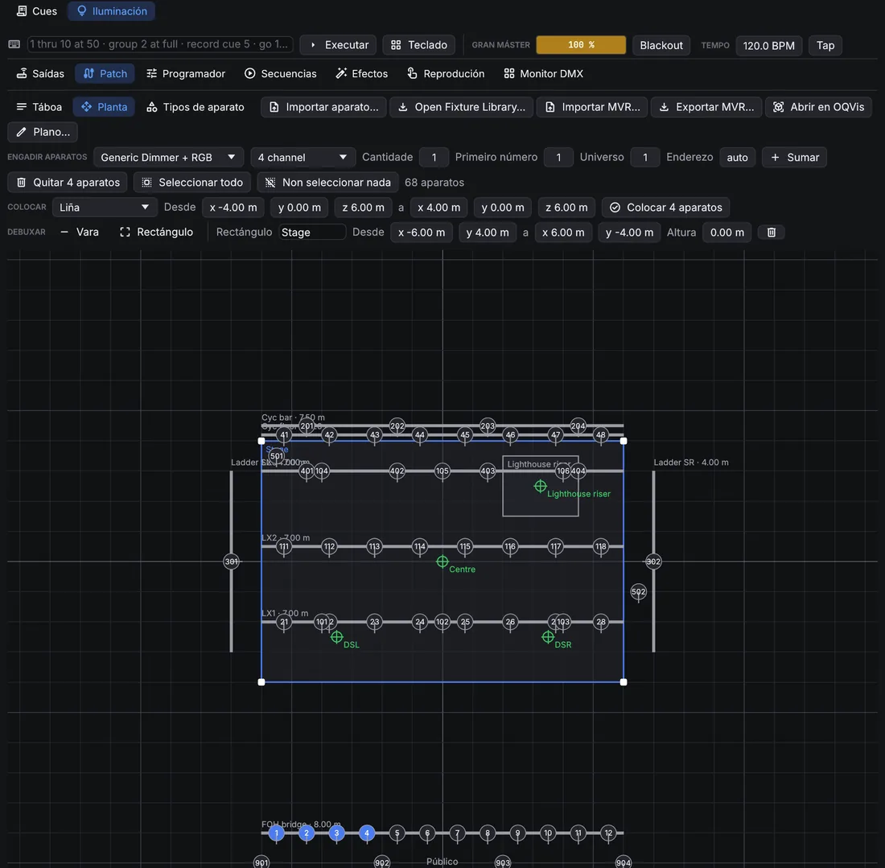
Para que a planta se pareza ao teatro real, debuxa nela: escolle Vara ou Rectángulo xunto a Debuxar e arrastra na planta. As varas son tubos, truss ou rúas, coa súa altura; os rectángulos son o escenario, tarimas ou escenografía. Fai clic nunha vara, ou no bordo dun rectángulo, para seleccionalo: arrástrao para movelo, arrastra os seus tiradores brancos para cambiar os seus extremos ou esquinas, e axusta o seu nome, coordenadas exactas e altura na fila de enriba. Supr sobre a planta bórrao. Con aparatos e unha vara seleccionados, Colgar reparte os aparatos ao longo da vara, á súa altura. Arrastra a etiqueta dunha vara ou dun rectángulo para apartala; o plano tamén a pon aí, e na fila de enriba devólvea ao seu sitio.
Tipos de aparato
OpenQ trae tipos xenéricos (dimmer, RGB, RGBW, CMY, cabezas móbiles, estrobo, fume). Importar aparato… (na
Táboa e na Planta) le ficheiros de Open Fixture Library (.json), GDTF (.gdtf), QLC+ (.qxf) e OpenQ
(.oqfixture). Os tipos importados cópianse no espectáculo e gárdanse na túa biblioteca de aparatos, así que
estarán no seguinte espectáculo. Tipos de aparato abre o editor: canles e os seus atributos, canles finas de 16
bits, valores por defecto, o valor que usa Resaltar e os rangos: as partes con nome dunha canle, como as
posicións dunha roda de cor ou de gobos. Os ficheiros GDTF traen tamén as cores dos LED do aparato, que usa o selector de
cor.

Na vista Planta, Exportar MVR… garda o patch coas posicións nun ficheiro MVR, que poden importar visualizadores e outras mesas. Exportar plano… garda a vista Planta como PDF (unha folla A3, á maior escala normalizada que caiba, como 1:50) ou como debuxo SVG —o tipo escóllese no diálogo de gardar— coas varas e rectángulos, números de aparato, enderezos e lenda. As etiquetas nunca se tapan: onde os aparatos están xuntos, as súas etiquetas sepáranse.
Programador
Selecciona aparatos nas súas fichas: un clic engade un aparato á selección (un segundo clic quítao), arrastrar por riba de varias fichas engádeas todas, e un clic dereito selecciona só ese aparato. Os grupos e a liña de ordes tamén seleccionan. O panel da dereita axusta os seus valores, cunha páxina por familia: Intensidade, Cor, Posición (arrastra no recadro para apuntar), Feixe e Control. Arrastra unha barra para fixar un valor, ou usa a roda enriba para pasos do 1 %. As canles con rangos teñen un botón por rango, por exemplo un por gobo.
O selector de cor amosa todas as cores visibles e ilumina as que pode dar o aparato seleccionado: a forma entre as cores dos seus LED. As de fóra vense apagadas, e un clic aí colle a cor máis próxima que pode dar. Cada aparato mestura a cor cos seus propios LED. As cores dos LED veñen do tipo de aparato (os ficheiros GDTF tráenas); sen elas OpenQ usa cores de LED típicas, e indícao baixo o selector.
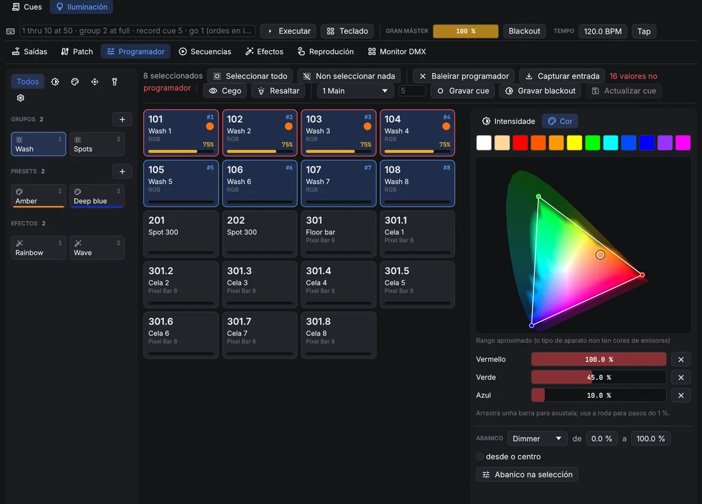
Os valores do programador mandan sobre a reprodución mentres están postos, e son o que garda Gravar cue. Baleirar programador devolve o control á reprodución.
- A columna da esquerda ten os grupos, presets e efectos como tarxetas. Os botóns de enriba amosan só os presets e efectos dunha familia (intensidade, cor, posición, feixe, control).
- Grupos: garda a selección como grupo; fai clic nun grupo para seleccionalo (Ctrl engade); con clic dereito sobrescríbese ou bórrase.
- Presets: garda os valores dos aparatos seleccionados como preset: todos os atributos, ou só a familia que amosa o filtro. Ao facer clic nun preset aplícase. As cues gardan unha ligazón ao preset, así que ao cambialo cambian todas as cues que o usan.
- Abanico reparte un valor pola selección, por exemplo de 0 a 100 %, tamén desde o centro cara a fóra.
- Cego permite programar sen cambiar a saída. Resaltar pon os aparatos seleccionados en branco aberto e a tope (non se grava); a frecha percórreos un a un.
- Capturar entrada leva ao programador o que reciben as entradas DMX, para gravar aquí un estado feito noutra mesa.
Liña de ordes e teclado
A liña de ordes, enriba das páxinas, acepta ordes ao estilo dunha mesa (en inglés); Teclado abre teclas en
pantalla para unha pantalla táctil (Borrar liña baleira a liña de ordes). As palabras pódense abreviar a dúas letras (th, gr, rec).
| Orde | Fai |
|---|---|
1 thru 10 at 50 | Selecciona os aparatos 1 a 10 ao 50 % de intensidade. > tamén significa thru, @ significa at. |
101.1 thru 101.12 at 80 | As celas 1 a 12 do aparato 101. |
group 2 + 7 - 3 at full | O grupo 2, máis o aparato 7, menos o 3, a tope. out é 0. |
1 thru 4 preset 3 | Aplica o preset 3. |
effect 2 | Lanza o efecto 2 na selección. |
gobo star, wheel 3 | Escolle un rango polo nome (abonda o principio) ou polo número. |
record cue 5 / 2 | Grava o programador como cue 5 da secuencia 2. Tamén record group 4, record preset 6. |
update, clear, blind, highlight | O mesmo ca os botóns. |
go 2, go cue 5 / 2, release 2 | Reproduce secuencias. |
delete cue 5 / 2 | Borra unha cue, un grupo ou un preset. |
Efectos
Un efecto move un atributo dun conxunto de aparatos cunha forma de onda: seno, triángulo, cadrada, ramplas, aleatoria, ou un círculo para panorama e tilt. A Velocidade vai en Hz, ou por pulso con Seguir o tempo. Tamaño e Base fixan a oscilación; vai arredor do valor da cue ou, con Absoluto, arredor da base. O Desfase escalona os aparatos, Grupos move varios aparatos xuntos e Ás reflicte o debuxo. A vista previa amosa o resultado nos aparatos.

Lanza un efecto desde o programador (os efectos ou effect 2) e grávao nunha cue. Segue funcionando nas cues
seguintes ata que unha cue o pare.
Os efectos compártense como ficheiros .oqfx: Exportar ficheiro de efecto… escribe un e o botón
da lista de efectos impórtaos. Gardar na biblioteca pon un
efecto na túa biblioteca de efectos, que todos os espectáculos ofrecen en Biblioteca.
Efectos de fórmula
Para debuxos que as formas de onda non poden facer, escribe unha fórmula. Preme (Novo efecto con fórmula) na lista de efectos, edita a fórmula na tarxeta Fórmula e preme Executar (ou Ctrl+Intro). OpenQ converte a fórmula nunha táboa: para cada fila do patrón e cada paso dun ciclo, fixa os atributos que nomeas. O primeiro aparato reproduce a fila 0, o seguinte a fila 1 e así sucesivamente, volvendo empezar despois da última fila. A velocidade, o tamaño, o desfase e os demais axustes séguense aplicando enriba. Unha fórmula é só aritmética: non pode abrir ficheiros nin repetir bucles, e nunca se executa durante a función; só se reproduce a táboa que creou.
# Un arco da vella que percorre oito aparatos, cun deslizador para a saturación.
param sat 1 0..1
effect "Rainbow run" steps 64 width 8 smooth
red, green, blue = hsv(t + row / width, sat)Unha instrución por liña; # empeza un comentario e as maiúsculas dan igual. As palabras da fórmula están en
inglés.
| Liña | Que fai |
|---|---|
param sat 1 0..1 | Un deslizador na tarxeta Fórmula: nome, valor inicial e rango (0 a 1 se
non se indica). Engade int para números enteiros. Os deslizadores van antes do primeiro efecto; ao movelos a
fórmula calcúlase de novo. |
effect "Nome" steps 64 width 8 smooth | Empeza un efecto: mostras por ciclo (1 a 4096),
filas do patrón (1 a 512) e smooth para fundir entre mostras (quítao para persecucións que saltan). Unha
fórmula pode crear varios efectos: o primeiro é o que editas, os demais engádense á lista. |
let k = sine(t) | Garda un valor para as liñas de debaixo. |
red, green, blue = … | Fixa atributos, cada un unha vez por efecto: dimmer,
red, pan, tilt, zoom, gobo_rotation, extra3…
Os niveis van de 0 a 1 (o que se sae recórtase). |
Os valores son números: t vai de 0 a 1 ao longo do ciclo, step conta os pasos (desde 0),
row é a fila do patrón, steps e width son os tamaños do efecto, e ademais os
deslizadores e os nomes de let. Usa + - * / % ^, parénteses, comparacións
(< <= == != >= >, que dan 1 ou 0) e and, or, not.
| Función | Resultado |
|---|---|
sine(x), triangle(x),saw(x), ramp_down(x) | As formas de
onda, de 0 a 1 nun ciclo (x en ciclos, normalmente t). |
square(x, duty) | 1 durante a primeira parte duty do ciclo (a metade se non se
indica) e logo 0. |
wave(x) | Unha onda senoidal de −1 a 1, x en ciclos; wave(x + 0.25) é
o coseno. |
hsv(ton, saturación, valor) | Vermello, verde e azul dunha cor (ton en voltas da roda de
cor). Dá tres valores, así que enche tres atributos: red, green, blue = hsv(t). |
pick(i, a, b, c…) | O valor número i da lista, desde 0 (volve empezar ao
final). |
if(condición, a, b) | a cando a condición non é 0; se non, b. |
noise(n, seed) | Un número aleatorio fixo de 0 a 1 para o número enteiro n (e
seed): sempre o mesmo. |
min(a, b…), max(a, b…) | O valor máis pequeno ou o máis grande. |
clamp(x, baixo, alto) | x dentro de baixo e alto (0 e 1 se non se indican). |
lerp(a, b, k) | De a (k = 0) a b (k = 1). |
smoothstep(x) | De 0 a 1 con inicio e final suaves. |
abs, floor, round, frac | Sen signo, arredondado cara abaixo, arredondado, a parte decimal. |
# Aparatos alternos, que se intercambian en cada metade do ciclo.
effect "Odd / even" steps 2 width 2
dimmer = if(step == row, 1, 0)
# Cabezas veciñas que se moven en sentidos opostos (Modo: Arredor do valor da cue).
effect "Scissors" steps 64 width 2 smooth
pan = 0.5 + pick(row, 0.5, -0.5) * wave(t)Un erro aparece baixo o editor coa súa liña e columna, e o efecto conserva a súa última táboa. Os espectáculos de OpenQ 0.3 con efectos de script de Python séguenos reproducindo; o script antigo amósase baixo a tarxeta Fórmula para reescribilo como fórmula, ou en Python como se explica abaixo.
Efectos feitos en Python
Algúns debuxos precisan un programa de verdade: un valor que depende do paso anterior (un paseo aleatorio, un debuxo que
medra), bucles ou datos doutro sitio. Escríbeos en Python no teu ordenador e gárdaos como ficheiro de efecto. OpenQ impórtao
como calquera outro ficheiro .oqfx, como datos: dentro de OpenQ non se executa nada. Serve calquera Python 3,
sen módulos extra.
- Garda isto como
wander.py. Fai que catro cabezas móbiles deambulen ao chou e volvan a onde empezaron:import json import random def save_effect(path, name, attributes, steps, width, level, smooth=True, **settings): """Write an OpenQ effect file (.oqfx). level(row, step) returns one level (0 to 1) per attribute. """ n = len(attributes) values = [0.0] * (n * steps * width) for row in range(width): for step in range(steps): for col, v in enumerate(level(row, step)): at = (row * n + col) * steps + step values[at] = min(1.0, max(0.0, float(v))) table = {"attributes": attributes, "steps": steps, "width": width, "smooth": smooth, "values": values} effect = {"name": name, "shape": "Custom", "attribute": attributes[0], "table": table} effect.update(settings) with open(path, "w", encoding="utf-8") as f: json.dump({"openq_effect": 1, "effect": effect}, f) def walk(steps, seed): """A random walk that ends where it started (no jump).""" rnd = random.Random(seed) x, points = 0.5, [] for _ in range(steps): x = min(1.0, max(0.0, x + rnd.uniform(-0.06, 0.06))) points.append(x) drift = points[-1] - points[0] return [p - drift * k / steps for k, p in enumerate(points)] STEPS, HEADS = 128, 4 pan = [walk(STEPS, seed=row) for row in range(HEADS)] tilt = [walk(STEPS, seed=100 + row) for row in range(HEADS)] save_effect("wander.oqfx", "Wander", ["Pan", "Tilt"], STEPS, HEADS, lambda row, step: (pan[row][step], tilt[row][step]), speed=0.05, relative=True, size=0.5, spread=0) - Execútao:
python3 wander.py(py wander.pyen Windows). Escribewander.oqfxno mesmo cartafol. - En OpenQ, vai a , preme (Importar ficheiros de efecto) e escolle o ficheiro. O efecto engádese á lista; lánzao en catro cabezas.
save_effect é a parte que hai que conservar para os teus propios efectos:
- attributes: os nomes que garda OpenQ, en inglés e con maiúsculas:
Dimmer,Red,Green,Blue,White,Pan,Tilt,Zoom,Iris,GoboRotation,Extra3… - steps: mostras por ciclo (1 a 4096); width: filas do patrón (1 a 512). Como moito 16 atributos e un millón de valores.
- level(row, step): devolve un nivel de 0 a 1 por atributo, na mesma orde.
- smooth: fundir entre mostras (
Falsemantén cada unha, para persecucións). - O resto son os axustes do efecto, todos opcionais:
speed(Hz),sync(seguir o tempo),sizeebase(0 a 1),relative(True= arredor do valor da cue),spread(graos),groups,wings. Todos se poden cambiar despois en OpenQ.
O último paso dun ciclo enlaza directamente co primeiro. Fai que
coincidan, como fai walk, ou o efecto dará un salto en cada ciclo. OpenQ comproba cada ficheiro que importa e
rexeita os que teñen tamaños ou valores incorrectos.
Secuencias
Unha secuencia é unha pila de cues. As cues de iluminación son de seguimento (tracking): unha cue só garda o que cambia, e o demais segue como o deixaron as cues anteriores. Cada cue ten un fade, un fade de baixada á parte para a intensidade que baixa, e un delay.

- Tempos por familia dá á cor, á posición ou ao feixe o seu propio fade e delay.
- Só esta cue: os seus cambios non se arrastran; a cue seguinte volve ao que había antes.
- Bloquear garda na cue todos os valores que arrastra, así que editar cues anteriores xa non a cambia. Unha cue bloqueada amosa un cadeado na lista e o botón di Bloqueado; prémeo outra vez para que eses valores volvan arrastrarse.
- Mover en negro (por secuencia): os aparatos apagados collen a posición, a cor e o feixe da súa seguinte cue antes de acenderse, tras o delay indicado.
- Cargar no programador recupera unha cue para editala; Actualizar cue, na páxina Programador, garda os cambios.
Executores
A barra de executores, abaixo no espazo de Iluminación, está nos dous modos. Ten o gran máster, o blackout, o tempo dos efectos (escríbese ou márcase con Tap) e un executor por secuencia: a súa cue actual e a seguinte, un fader de nivel, GO e Liberación.

Superficies de control
Un controlador MIDI ou unha aplicación OSC (TouchOSC, por exemplo) poden manexar os executores. En escolle a entrada MIDI deste ordenador e engade asignacións: preme Aprender novo (ou o control dunha asignación), move un fader ou preme un botón e escolle que fai. Banco de executores engade dunha vez faders en CC 1–8 e botóns nas notas 36–43. Os executores numéranse polo seu lugar na lista de secuencias.
- Faders: nivel de executor, gran máster.
- Botóns: GO, liberar e flash de executor (a tope mentres se mantén), blackout, liberar todo, tap tempo, e o GO e Parar todo da lista de cues. Un botón actúa unha vez por pulsación, mande notas, CC 127/0 ou OSC 1/0.
As asignacións gárdanse co espectáculo; a entrada MIDI é do ordenador, así que un dispositivo remoto pode usar o seu propio
controlador (os seus movementos van ao dispositivo principal). As asignacións OSC chegan polo
receptor OSC, que ademais entende os enderezos /light/… sen asignación.
Saídas e entradas
Na páxina Saídas engade a onde vai o DMX: Art-Net (o enderezo dun nodo, ou difusión; Buscar dispositivos lista os nodos da rede), sACN (multicast ou un enderezo unicast, con prioridade) ou unha interface Enttec DMX USB Pro (ou compatible). Cada saída envía unha lista de universos: o universo do patch á esquerda e o número no cable á dereita (Art-Net conta desde 0). Cada saída funciona pola súa conta, así que un dispositivo lento ou desconectado non frea os demais, e un perdido vólvese abrir só.

As entradas reciben Art-Net ou sACN doutra mesa. Cada unha mestura coa saída de OpenQ (gaña o valor máis alto), a substitúe nos universos que recibe, ou queda só para capturar. Se varias mesas envían o mesmo universo sACN, gaña a de máis prioridade. OpenQ ignora os seus propios paquetes, así que unha saída en difusión non volve entrar por unha entrada.
Unha saída Art-Net pode mandar ArtSync tras cada fotograma, para que os nodos que o admiten cambien todos os seus universos á vez. Maiús+clic nun nodo da lista Nodos envíalle os universos que emite; un aviso indica cando a saída manda un universo que o nodo escollido non ten. Unha entrada Art-Net responde ás mesas que buscan nodos (ArtPoll), así que as mesas que só envían aos nodos que atopan tamén envían a OpenQ.
Monitor DMX
O monitor DMX amosa cada canle dun universo tal como sae, entradas incluídas. Unha liña amarela marca onde empeza cada aparato.

Dispositivos remotos e visualizadores
Un dispositivo remoto recibe o deseño de iluminación e os seus cambios, e amosa os executores e a saída DMX do dispositivo principal; o seu GO e os seus faders actúan no dispositivo principal. Un dispositivo co rol de edición tamén pode cambiar o deseño. Un visualizador pode seguir a OpenQ do mesmo xeito, ou ler o DMX por Art-Net ou sACN e a montaxe dun MVR exportado.
12Dispositivos remotos
Un segundo ordenador con OpenQ na mesma rede pode seguir o espectáculo e levalo. Pode ser o portátil do regedor ou unha tableta na mesa técnica. O ordenador que leva o espectáculo é o dispositivo principal, e fai toda a reprodución. O outro dispositivo amosa a súa lista de cues, cabezal, cues en marcha e medidores, e envíalle GO e outras ordes.
Emparellar un dispositivo
- No dispositivo principal, abre , marca
Deixar que se conecten os dispositivos emparellados e fai clic en Emparellar un dispositivo novo…. Aparece un código como
C9XR-E9HJ. - No outro dispositivo, abre , fai clic en Buscar e escolle o dispositivo principal. Se a busca non atopa nada, escribe o seu enderezo, que aparece na xanela Remoto do dispositivo principal.
- Introduce o código e fai clic en Conectar. A partir da primeira vez, conectar non precisa código.
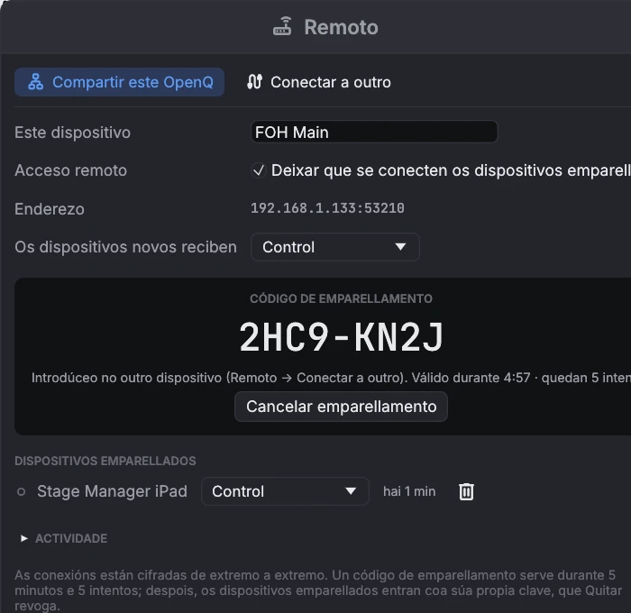
Roles
| Rol | O dispositivo pode |
|---|---|
| Só ver | Seguir o espectáculo: lista de cues, cabezal, cues en marcha e medidores. |
| Control | Ademais, premer GO, parar, pausar e retomar, mover o cabezal e iniciar ou parar cues soltas. |
| Control e edición | Ademais, editar o espectáculo. Os cambios gárdanse no dispositivo principal. |
Axusta o rol que reciben os dispositivos novos, e cambia o de calquera dispositivo, na xanela Remoto do dispositivo principal. Os cambios aplícanse ao momento. Quitar desconecta un dispositivo axiña, e ten que volver emparellarse para reconectar. Cando un dispositivo se desconecta, recupera o seu propio espectáculo. Os ficheiros de medios quedan no dispositivo principal, así que engádeos alí.
As conexións van cifradas e autenticadas. Un código de emparellamento vale 5 minutos e 5 intentos, e quen grave o tráfico de rede non pode deducilo a partir da gravación. Despois do emparellamento, cada dispositivo entra coa súa propia clave secreta. Un enderezo que falla unha e outra vez bloquéase 5 minutos. A lista Actividade amosa as conexións e os intentos rexeitados.
O acceso remoto usa o porto TCP 53200, e a busca
usa o porto UDP 53201. Un devasa no dispositivo principal ten que permitir os dous. Nunha wifi de convidados
a busca pode non atopar nada; escribir o enderezo segue a funcionar.
13OSC e cues de rede
Activa Control remoto OSC en . Escoita no porto UDP 53000 por defecto. As cues identifícanse polo seu número.
| Enderezo | Acción |
|---|---|
/go | GO |
/stop · /panic | Parar todo co fundido · parar todo ao instante |
/pause · /resume | Pausar todo · retomar todo |
/playhead/next · /playhead/previous | Mover o cabezal |
/playhead/4.2 | Poñer o cabezal na cue 4.2 |
/cue/4.2/start | Tamén stop, pause, resume, devamp |
/light/executor/2/level 0.5 | Nivel do executor 2; tamén go, release, flash (1 = premer, 0 = soltar). /light/grandmaster 0.8, /light/blackout, /light/release, /light/tap |
Unha cue Rede envía unha mensaxe OSC a outros equipos. Axusta o host, o porto, o enderezo
(por exemplo /eos/cue/12/fire) e os argumentos. Os argumentos sepáranse con espazos: os números envíanse como
números e o texto entre comiñas como texto.
14Axustes
, ou o botón á dereita da barra de estado. Gárdanse co espectáculo, agás a lingua e a entrada MIDI das superficies de control, que son de cada ordenador.
| Lapela | Axustes |
|---|---|
| Xeral | Lingua da interface (galego, español ou inglés; cambia ao momento), tempo de fundido de Parar todo, protección contra dobre GO, volume xeral, OSC activado e porto. |
| Audio | Dispositivo de saída. Cambialo para toda a reprodución. As matrices de enrutado apuntan ás saídas deste dispositivo. A sala para audio por obxectos: os altofalantes, onde están e a que saída vai cada un. |
| Escenarios de vídeo | Engadir e nomear escenarios, tamaño do lenzo, pantalla de saída, pantalla completa, mapping. |
| Superficies de control | A entrada MIDI deste ordenador e as asignacións de superficies de control do espectáculo, con aprendizaxe. |
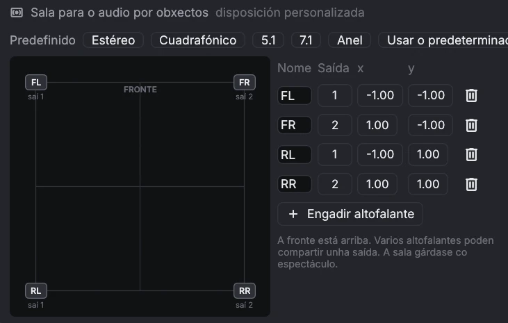
Mentres non a cambies, a sala segue o dispositivo de saída: un par estéreo, cuadrafónico, 5.1 ou 7.1 (sen altofalante na saída LFE), ou un anel para outros números de canles. Os predefinidos configuran esas salas, e Usar o predeterminado volve seguir o dispositivo. A fronte, onde está o escenario, queda arriba. Varios altofalantes poden compartir unha saída.
Os axustes de acceso remoto e as claves dos dispositivos pertencen ao ordenador, non ao espectáculo. Están en
~/.config/openq/remote.json, lexible só pola túa conta de usuario.
15Seguridade ante fallos
Un espectáculo ten que seguir cando algo sae mal. OpenQ mantén os problemas o máis pequenos posible e recupera o teu traballo se chega a caer.
Autogardado e recuperación
Mentres un espectáculo ten cambios sen gardar, OpenQ garda unha copia cada poucos segundos. Gardar o espectáculo, ou saír con normalidade, borra a copia. Se OpenQ ou o ordenador caen, o seguinte arranque ofréceche a copia:
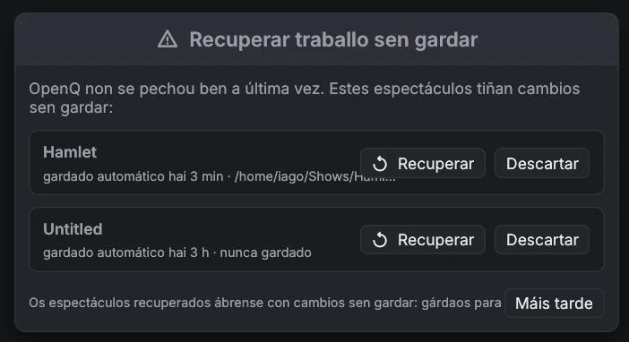
- Recuperar abre a copia cos cambios sen gardar. Gárdaa para conservalos (gárdase no propio ficheiro do espectáculo).
- Descartar borra a copia para sempre.
- Máis tarde pecha a xanela; volve preguntar a próxima vez.
Gardar un espectáculo escribe primeiro un ficheiro temporal e ponno no seu lugar cando xa está a salvo no disco, así que un fallo ou un corte de luz durante o gardado deixa intacta a versión anterior.
Cando algo falla durante unha función
| Que pasa | Que fai OpenQ |
|---|---|
| O dispositivo de audio desaparece (desconectado, servidor de audio reiniciado) | Os seus sons páranse e a barra de estado amosa audio perdido · reconectando…. OpenQ tenta abrir o mesmo dispositivo cada 2 segundos e segue en canto volve. O vídeo e as demais cues seguen a funcionar. |
| Un ficheiro de medios está danado | Esa cue remata cun erro en ; todas as demais cues seguen a soar. |
| Un erro interno no motor de cues | Todas as cues páranse á vez, o cabezal queda onde estaba e o rexistro explica que pasou. O seguinte GO funciona coma sempre. |
| Unha cue iníciase a si mesma nun bucle sen tempo (unha cue Iniciar que apunta a si mesma, ou dúas que se apuntan entre si) | Retense e o rexistro nomea a cue, en lugar de enlentecer todo o espectáculo. |
| Máis de 256 sons á vez | As cues de audio adicionais rexéitanse cun erro no rexistro. |
Os autogardados e os informes de fallos están no cartafol de axustes de OpenQ: ~/.config/openq en Linux,
~/Library/Application Support/OpenQ en macOS, %APPDATA%\OpenQ en Windows, en
recovery e crash. Un informe de fallo contén que saíu mal e onde; achégao, por favor,
cando informes dun problema.
Rexistro de erros. Cada aviso e erro (entradas do rexistro do motor, fallos de dispositivos, gardados ou
aperturas fallidos, caídas) tamén se escribe, coa data e a hora en UTC, en logs/openq.log dentro do mesmo
cartafol, para que poidas revisalo despois da función. ábreo. Cando supera
os 2 MB, móvese a openq.old.log a próxima vez que arrinca OpenQ.
16Atallos de teclado
| Teclas | Acción |
|---|---|
| Espazo | GO |
| Esc | Parar todo (con fundido); preme outra vez para parar ao instante. Tamén cancela unha edición nunha fila. |
| P / R | Pausar todo / retomar todo |
| ↑ ↓ | Mover o cabezal |
| ← → | Pregar / despregar un grupo |
| Ctrl+E | Cambiar entre modo edición e modo función |
| Intro | Renomear no sitio a cue seleccionada |
| Ctrl+1 … 0 | Nova cue Audio, Vídeo, Grupo, Espera, Memo, Fade, Iniciar, Parar, Pausa, Ir a |
| Ctrl+D · Ctrl+G · Supr | Duplicar · agrupar a selección · borrar |
| Ctrl+Z · Ctrl+Maiús+Z | Desfacer · refacer (ata 200 pasos; os espectáculos moi grandes gardan menos, polo menos 10, para aforrar memoria) |
| Ctrl+N / O / S / Maiús+S | Novo / abrir / gardar / gardar como |
| F1 | Abrir este manual de usuario |
| F11 | Pantalla completa, nunha xanela de escenario |
| ← → ↑ ↓ (+Maiús) | Mover 1 (10) píxeles a esquina baixo o rato ao facer mapping |
| Atallo da cue | Dispara esa cue directamente (axústase na lapela Disparadores) |
17Solución de problemas
| Problema | Proba |
|---|---|
| Non hai son | Mira a barra de estado. Se di sen audio, escolle outro dispositivo en Axustes → Audio. Comproba o volume mestre e o nivel e o enrutado da cue. |
| Unha cue Micro non soa | Comproba o dispositivo de entrada e as canles na súa lapela I/O; a barra de nivel amosa se chega algo. En macOS e Windows, OpenQ precisa permiso para usar o micrófono. |
| Os disparadores por código de tempo non se disparan | Abre a xanela Timecode… da lista e comproba que recibe código de tempo á frecuencia correcta. As cues só se disparan mentres o código avanza polo seu tempo de disparo. |
| Unha cue Cámara non amosa nada | Comproba o dispositivo na súa lapela Cámara (usa para volver buscar) e o rexistro do motor. Outro programa que use a cámara pode bloqueala. |
| Unha cue amosa unha icona vermella | O seu ficheiro de medios falta ou non se pode ler, ou borrouse a súa cue de destino. Se o ficheiro se moveu, fai clic en Examinar… na lapela Básico da cue para atopalo de novo. Tras reconectar unha unidade, dálle uns dous segundos para que desapareza. |
| Un vídeo non aparece | Abre a xanela do escenario desde o menú Vídeo. Comproba o escenario, a opacidade e a capa da cue, e busca erros do descodificador en . Unha tarxeta gráfica só pode amosar imaxes ata certo tamaño (a miúdo 8192 ou 16384 píxeles de ancho). OpenQ reduce imaxes fixas, SVG e texto para que caiban, pero unha película maior queda fóra: convértea a un tamaño menor. |
| A barra de estado di audio perdido · reconectando… | O dispositivo de audio desapareceu. Volve conectalo ou reinicia o servizo de audio; OpenQ reconéctase só. Para usar outro dispositivo, escólleo en Axustes → Audio. |
| OpenQ pide recuperar traballo sen gardar | A última vez non se pechou con normalidade. Ver Seguridade ante fallos. |
| GO parece non facer nada | A cue baixo o cabezal pode estar desarmada, ou a segunda pulsación pode ter chegado dentro da protección contra dobre GO. |
| Un dispositivo remoto non atopa o principal | Asegúrate de que o acceso remoto está activado e de que os dous están na mesma rede, e escribe o enderezo que aparece no dispositivo principal. |
| "Pair this device again" (remoto) | O dispositivo quitouse no principal, ou esqueceuse a súa clave. Abre o emparellamento no dispositivo principal e introduce o código novo. |
| Algo falla e non sabes por que | Abre : cada aviso, erro e caída queda alí coa súa hora. |
18Licenza e créditos
OpenQ distribúese baixo a Apache License 2.0. Este resumo é orientativo; o texto en inglés é o que vale.
| Podes | Debes |
|---|---|
| Usar OpenQ para calquera cousa, tamén comercial: facer funcións, concertos, xiras, eventos e instalacións de pago, e cobrar por programalos ou operalos. | Conservar o aviso de copyright, LICENSE.md e NOTICE.md en cada copia. |
| Copialo, modificalo e compartilo. | Indicar nos ficheiros que modifiques que cambiaron. |
| Vender copias, versións modificadas ou servizos baseados nel. | Non usar o nome OpenQ como marca: a licenza non dá dereito a iso. |
Copyright 2026 Iago Núñez — OpenQ (https://github.com/iagonunez/OpenQ) amosa a versión, a licenza e todos os avisos de terceiros.
Son as fontes (Inter, JetBrains Mono e Barlow Condensed baixo a SIL Open Font License; Material Symbols baixo Apache 2.0; as
fontes incluídas en egui) e as bibliotecas Rust de código aberto coas que se constrúe OpenQ, cada unha coa súa propia
licenza. Os mesmos textos están en NOTICE.md e THIRD_PARTY_LICENSES.md xunto ao programa.
OpenQ reproduce vídeo coas bibliotecas FFmpeg. En Windows e
macOS o instalador pon dentro de OpenQ unha compilación sen partes GPL, coa súa licenza no cartafol Licenses;
en Linux OpenQ usa o FFmpeg do sistema. FFmpeg ten a súa propia licenza. Se pasas un OpenQ compilado a outras persoas, usa
un FFmpeg sen partes GPL, ou a GPL 3 cubrirá todo o programa. Ver NOTICE.md.